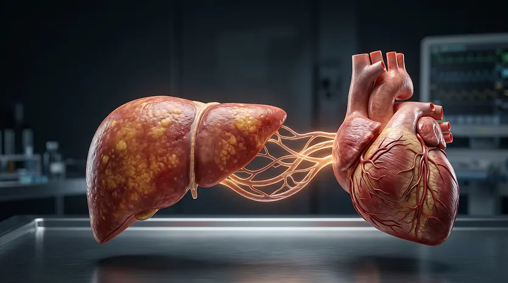

25 Mai 2026
Corpos fortes. Corações vulneráveis?
O que a morte precoce de atletas do fisiculturismo pode nos ensinar sobre saúde, performance e os limites reais do corpo humano.
Ler artigoArtigos baseados em ciência sobre cardiologia, nutrição, longevidade e performance — escritos pela equipe médica da Luminae para guiar decisões de saúde com precisão.
O que a morte precoce de atletas do fisiculturismo pode nos ensinar sobre saúde, performance e os limites reais do corpo humano.
Ler artigoDurante muitos anos, acreditamos que o infarto começava nas artérias. A ciência revela que o intestino pode influenciar diretamente.
Ler artigo
CardiologiaVocê provavelmente já ouviu falar em fígado gorduroso. Mas a medicina moderna revela que o problema vai muito além do fígado.
Ler artigoMúsculo não é estética. É proteção metabólica, equilíbrio hormonal, saúde óssea e independência funcional. O que muda depois dos 40.
Ler artigoMilhões sofrem com insônia sem saber que a raiz do problema pode estar no sistema digestório. A ciência revela essa conexão poderosa.
Ler artigoTreinar mais não significa treinar melhor. Em muitos casos, o excesso de esforço sem acompanhamento pode comprometer o coração.
Ler artigoNovos artigos sobre cardiologia, nutrição e longevidade — sem ruído, só conteúdo que importa.